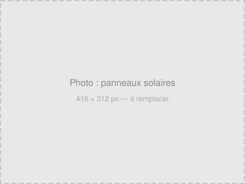

Pitoeuf SA est un grossiste alimentaire familial établi à Saxon, en Valais. Depuis 1947, quatre générations se succèdent pour approvisionner les professionnels de la restauration en produits frais et surgelés.
Confiance
Plus de 1600 restaurants, hôtels, cafés et collectivités nous font confiance, en Suisse romande et alémanique.
Sécurité
Un stock permanent d'environ 2500 tonnes de produits frais et surgelés assure la continuité de votre approvisionnement.
Traçabilité
Chaque produit entrant est contrôlé, étiqueté et stocké en froid. Un suivi informatique précis garantit la traçabilité complète.
frais et surgelés
par an
professionnels
permanent

Ancrage local & environnement
Implantée en Valais, l'entreprise met en avant les produits régionaux et suisses dans son assortiment — produits du terroir valaisan, circuits courts, sourcing local. Son centre logistique de Saxon est équipé d'une installation solaire.